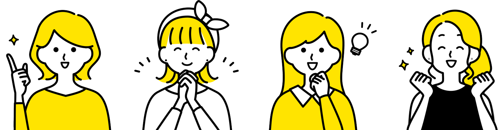
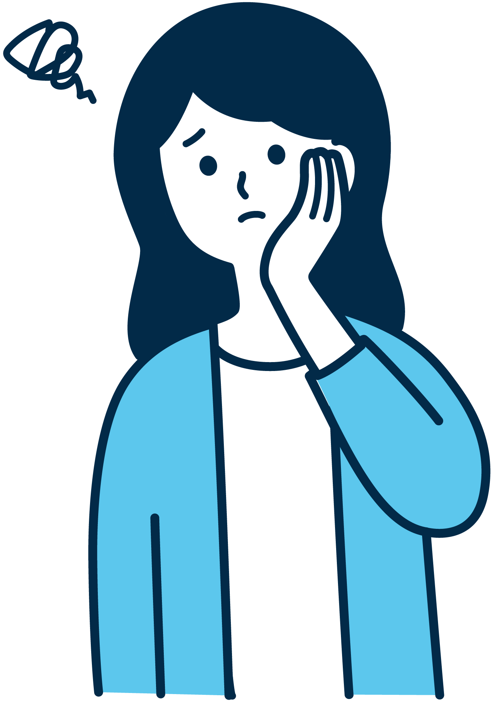

書類と面接などを通して、志望理由や入学後に学びたいことを丁寧に評価します。事前にオープンキャンパスへの参加をおすすめしています。
- 選考方法
- 書類審査・面接・課題など（予定）
- 出願期間
- 入学試験要項にて公開予定
- 試験日
- 入学試験要項にて公開予定
- 募集人員
- 学科別に要項で公開
【 入試情報 】
入試制度、出願の流れ、学費・奨学金、よくある質問をまとめています。
このページの日程・条件はすべて仮のものです。必ず公式の入学試験要項でご確認ください。
【 入試制度 】
【出願の流れ】
出願はWebで受け付けます（予定）。手順は入試区分により異なる場合があります。
学費の金額は学科ごとに異なります。最新の金額は入学試験要項でご確認ください。
【学費・奨学金】
【 資料・ダウンロード 】

大学案内を請求する（無料）›
入試区分によっては併願が可能です。併願の可否と条件は入学試験要項でご確認ください。
専願が条件となる入試区分を除き、他大学との併願が可能です。
参加の有無が合否に影響することはありません。ただし、学科の雰囲気を知るために参加をおすすめしています。
入試の成績に応じて、入学前に採用が決まる大学独自の奨学金を準備しています（制度内容は仮）。
はい、保護者の方もご参加いただけます。保護者向けの説明会も予定しています。